Solid Waste Management Awareness
Survey Field:-
Jalandhar Cantt Nalwa Fafa residential Qtrs and surroundings
Overview
Details ▼
- Introduction:-
This page showcase data over our research and survey in Jalandhar cantontment Dusshera ground region - We have survey 2 societies and 2-outdoor locations of Jalandhar cantontment regarding the evaluation and Problems of Solid Waste Management.
- The research contains gallery, Data representations, Interactive Quiz, and our conclusions.
Key Findings
Details ▼
- Waste Management Practices in Households:
Lot of awareness among the homemakers about the waste disposals and recycling on daily basis. - Community Green Spaces and Usage:
Parks and other green spaces are being utilized by residents, Also even though a lots of waste is generated but disposed at the same time daily. - Air Quality and Environmental Concerns:
residents' perceptions of air quality and environmental concerns related to SWM within the Army Cantt area are of very generalised basis. - Social Activities:
Waste management after social events at personal level are good impressive and at society level they are decent. reference:-After effects of diwali (more in conclusion) - Community Composting Participation:
Composting is at very impressive level in the society due to small garden and farmland setups by homemakers. - Community Awareness of Local Recycling Facilities:
Recycling of Metal,Glass bottle, Plastic , Old items ,paper is very oftenly done through scrap collectors or dedicated facilities.(weekly or monthly) - Community Awareness regarding open dumping:
Negative behaviour can be seen through the open dumping in non residential space and ground.
Gallery
Click to view Images ▼
Compound Area and Open disposal conditions near residential societies
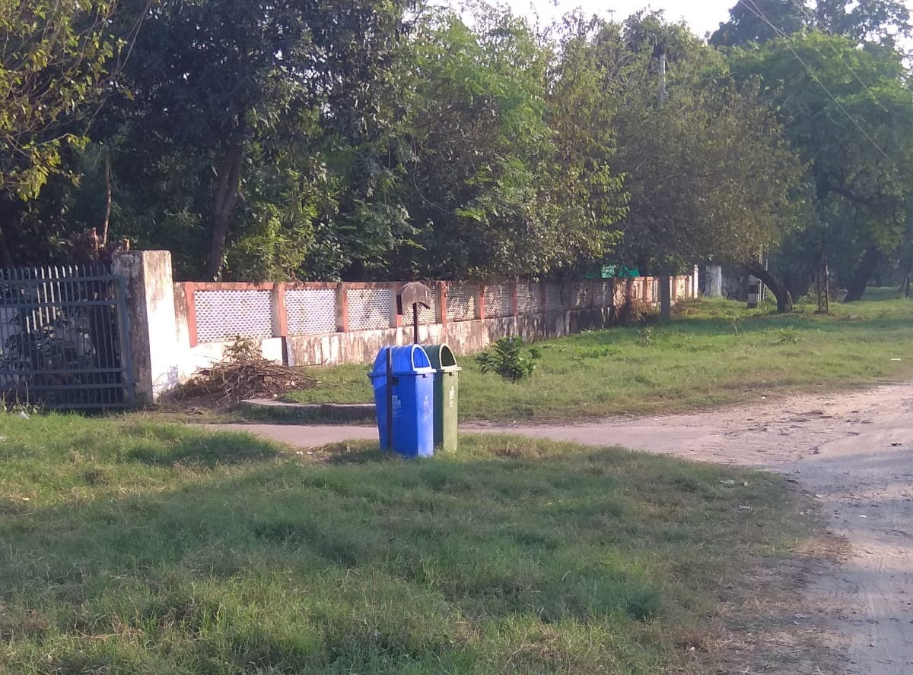 Front of Society
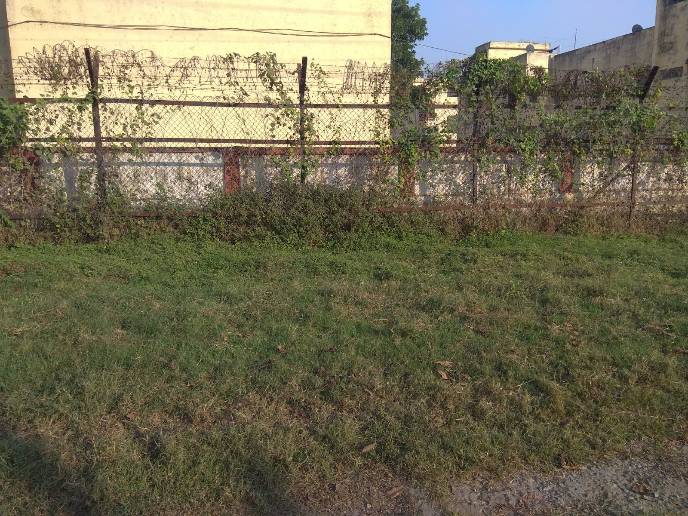 Front of Society
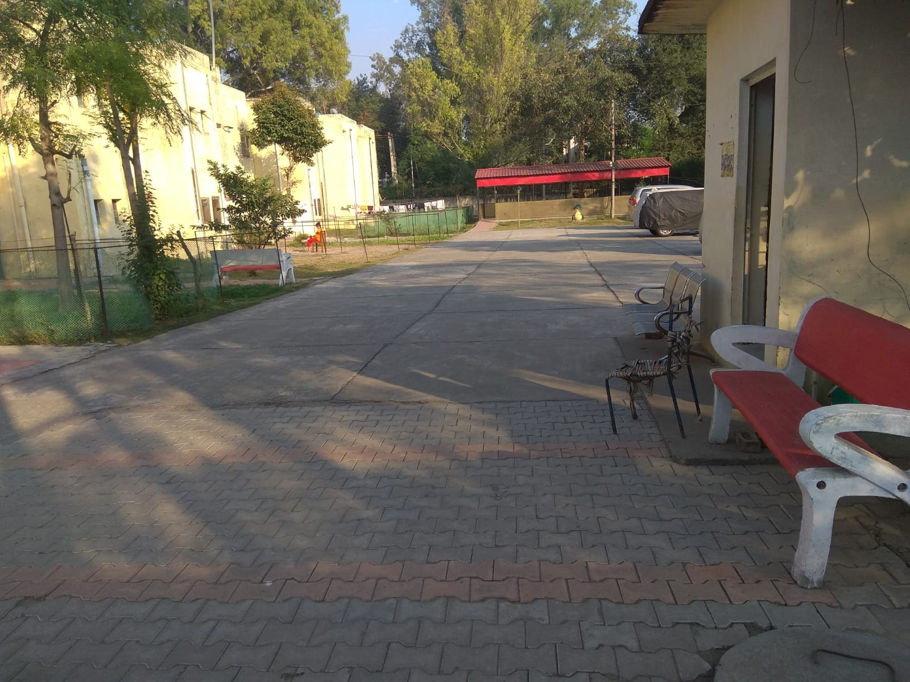 Society compund
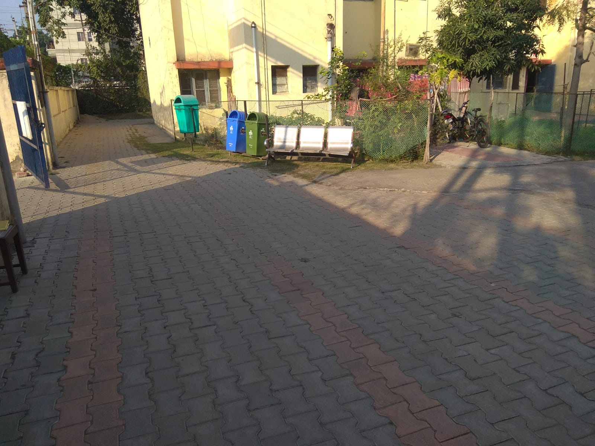 Society compund
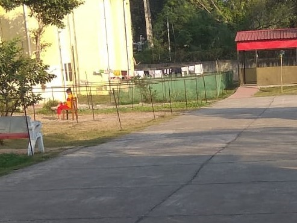 Society compund
 Empty plot
Empty plot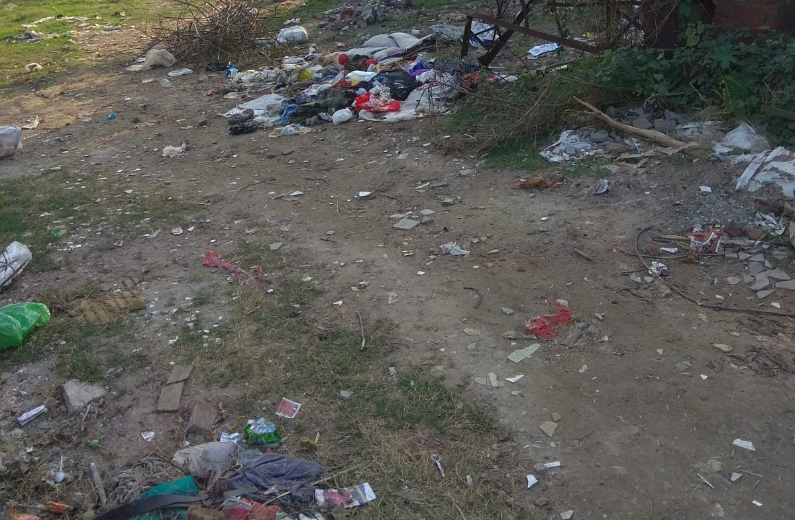 Empty plot
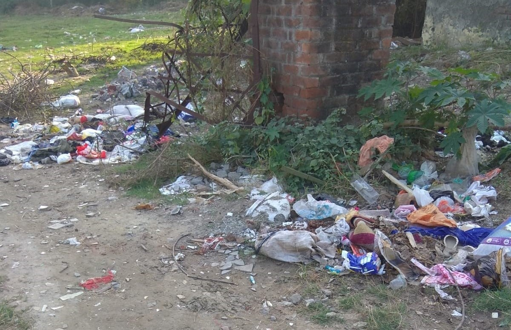 Empty plot
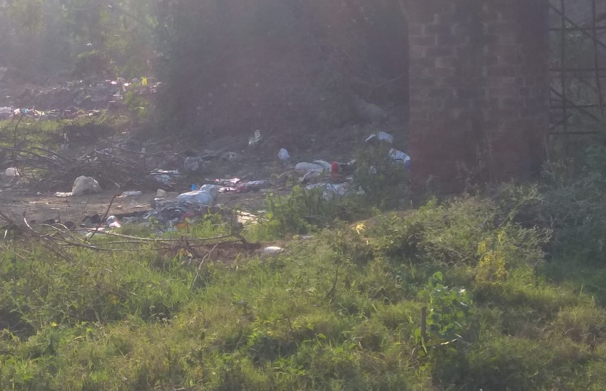 Empty plot
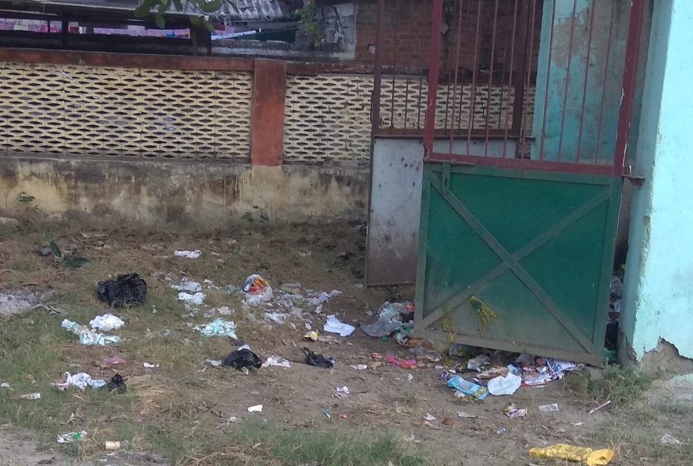 Common Trashbank1
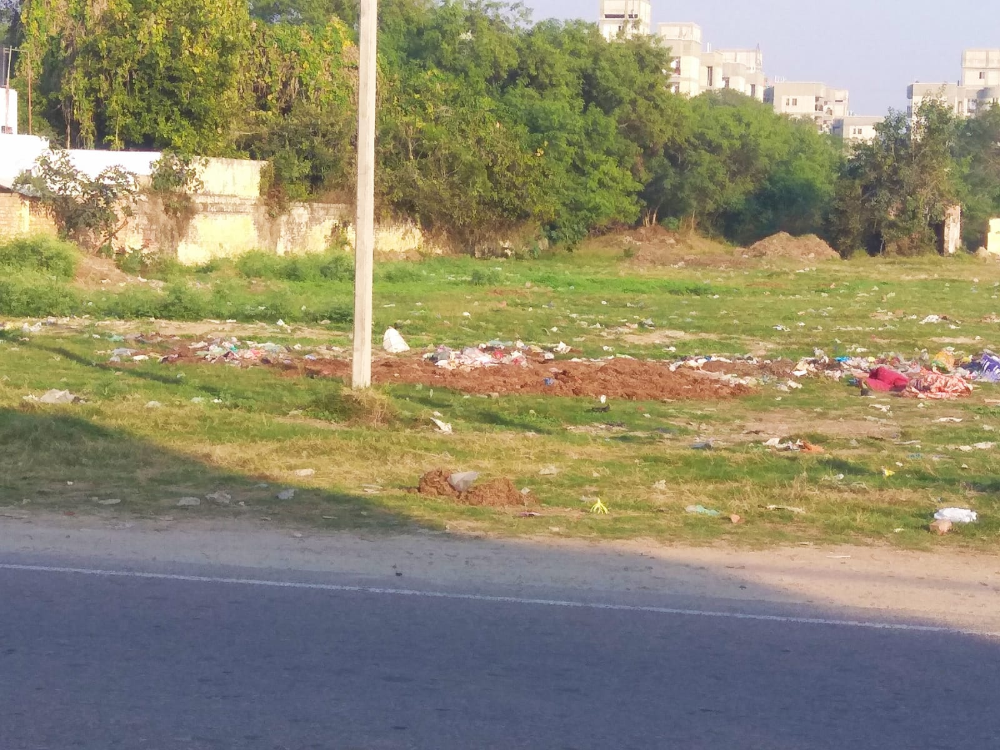 Non residential ground
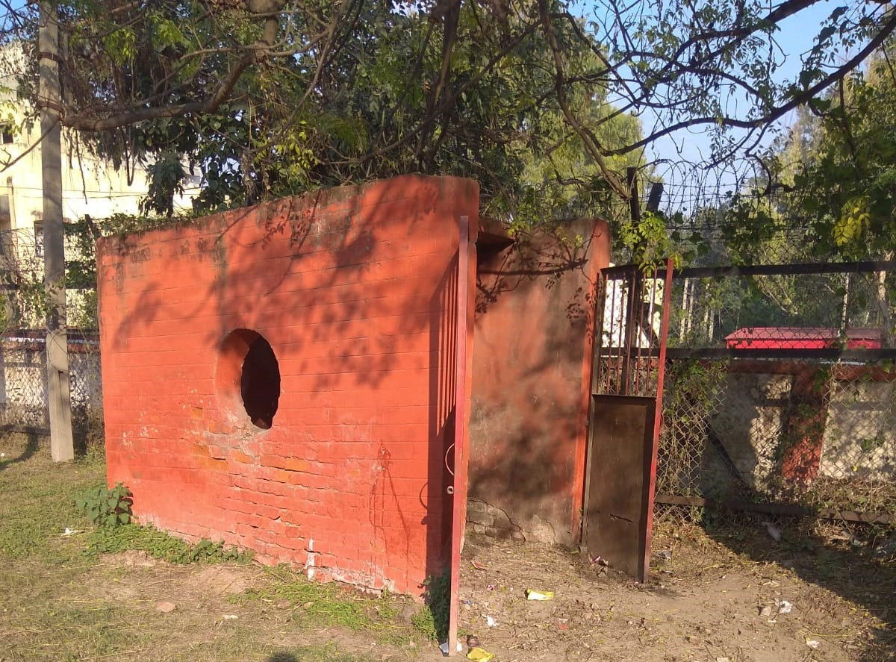 Common Trashbank2
 Non residential ground
Non residential ground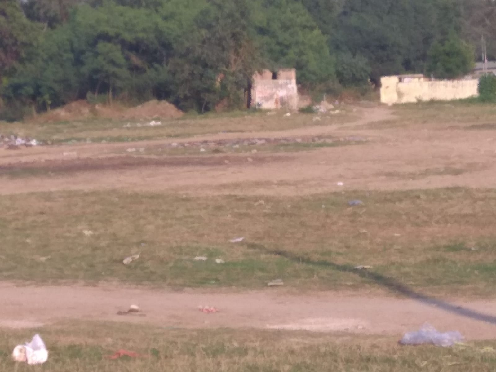 Non residential ground
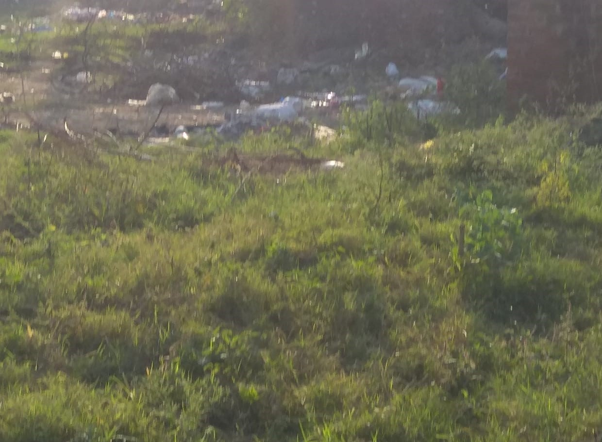 Non residential ground
Interactive Elements
Details ▼
-
Solid Waste Management Quiz
Data Tables and Charts
Details ▼
-
Composting in Nalwa Fafa Qtrs:-
- Observation:-
- It can be seen that 80% of residents are indugled in composting with majority being 46% in kitchem/food scrap composting
- Main reason behind the composting activities in the locality can root to the garden and small farmland activities.
-
Scrap recycling (Multiple items per person):
- Observation:-
- Noticeably the paper paper is the most recycled waste. As paper waste is commonly traded (recycled) as *radhdi (local scrap collector)
- Paper , Glass , Metal , Plastic being most recycled shows the awareness of residentials in regards of the knowledge of recycling
Conclusion
Details ▼
Our second survey ,on JRC army cantt locality,concludes that people at home are pretty good at handling their waste and recycling every day. The community uses parks well and manages to throw away the trash generated daily. When it comes to air quality and environmental worries, people have general concerns in the Army Cantt area. After parties and events, both individuals and the community do a good job of managing waste, especially after Diwali. People are also doing a great job with composting, using small gardens and farmland. They are also recycling things like metal, glass, plastic, old items, and paper regularly through collectors or special places, like every week or month. Overall, the survey tells us that the community is doing well in taking care of the environment and handling waste responsibly.- Performace wrt survey 1:-
homemakers have much stronger awareness and knowledge of solid waste management practices i.e. Composting Kitchen and yard waste - Improvement needed wrt survey 1:- Points to make improvement here are significantly less than Lpu respondents. But the major conclusion regarding this is the open dumping in non residential space and ground.